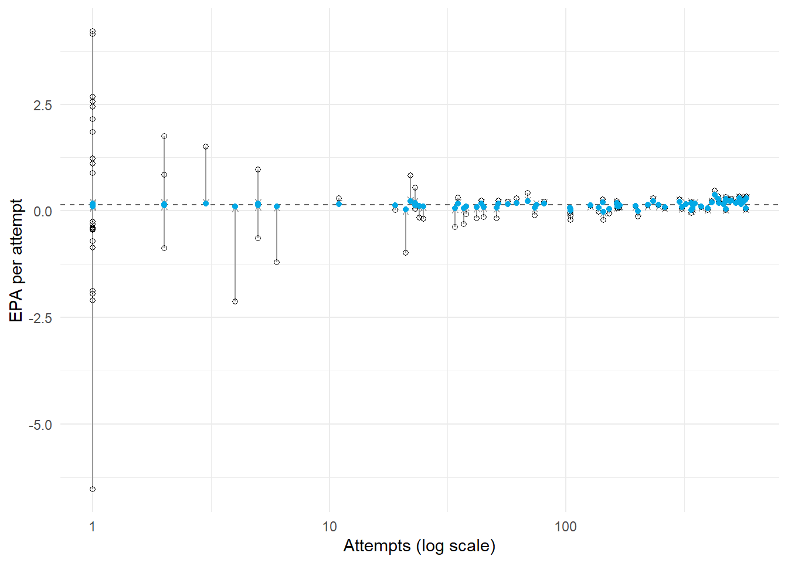
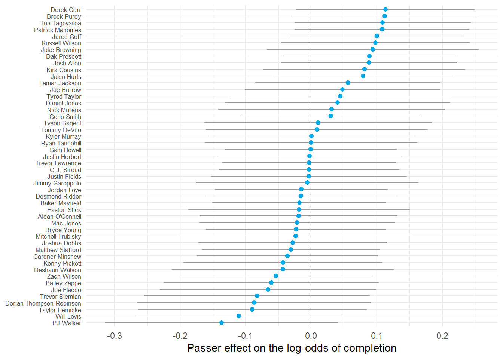

no_pooling <- passes %>%
group_by(passer) %>%
summarize(attempts = n(), epa_mean = mean(qb_epa), .groups = "drop")
complete_pooling <- mean(passes$qb_epa)
complete_pooling[1] 0.1741105Hua Gong
After this tutorial, you should be able to:
lme4;Tutorial 4.1 showed that the observed EPA per attempt is a noisy estimate of ability. There are three natural estimators.
Complete pooling ignores the passer entirely and uses the league mean for everyone:
No pooling uses each passer’s own mean:
Partial pooling uses a compromise, and the multilevel model tells us the weight.
At level one, each attempt is the passer’s mean plus noise:
At level two, each passer’s mean is the league mean plus a passer deviation:
Substituting gives the composite model
Here is a fixed effect: one unknown constant for the whole league. The are random effects: they are treated as draws from a distribution whose variance is estimated. The word “random” does not mean the passers were sampled at random. It means we model the population of passer effects with a distribution and borrow strength across them.
For every observation stacked into a vector of length ,
where is the fixed-effect design matrix, is the random-effect design matrix with one indicator column per passer, , and . Marginally,
Two attempts by the same passer share the passer’s , so their covariance is ; attempts by different passers are independent. This marginal covariance is what maximum likelihood fits.
The formula (1 | passer) requests a varying intercept for each passer.
| Estimate | Std. Error | t value | |
|---|---|---|---|
| (Intercept) | 0.1456 | 0.0197 | 7.3992 |
| grp | vcov | sdcor |
|---|---|---|
| passer | 0.0133 | 0.1151 |
| Residual | 2.3716 | 1.5400 |
The residual standard deviation is large because a single pass attempt can swing EPA by several points. The passer standard deviation is small in comparison, which is exactly why individual attempts tell us so little.
The share of variance that lies between passers is
It is also the correlation between two attempts by the same passer.
[1] 0.005556992Less than one percent of the variance in EPA per attempt is between passers. That does not mean passers do not matter. It means that hundreds of attempts are needed before the between-passer signal emerges from the within-passer noise, which is consistent with the reliability calculation in Tutorial 4.1.
Conditional on the variance components, the best estimate of is a weighted compromise between the passer’s own mean and the fixed intercept:
The weight is the reliability from Tutorial 4.1. A passer with many attempts keeps most of their observed deviation; a passer with few attempts is pulled almost all the way to the league mean.
Treat as unknown with distribution and the passer’s mean as data with . Bayes’ rule with a normal prior and normal likelihood gives a normal posterior whose mean is precision-weighted:
The estimator is called the best linear unbiased predictor (BLUP) in the mixed-model literature and the posterior mean in the Bayesian literature. Tutorial 4.4 returns to this identity.
beta0 <- fixef(epa_fit)[["(Intercept)"]]
manual <- no_pooling %>%
mutate(
weight = shrinkage_weight(attempts, tau2, sigma2),
u_manual = weight * (epa_mean - beta0)
)
lme4_effects <- ranef(epa_fit)$passer %>%
tibble::rownames_to_column("passer") %>%
rename(u_lme4 = `(Intercept)`)
comparison <- manual %>%
inner_join(lme4_effects, by = "passer") %>%
mutate(partial_pooling = beta0 + u_lme4)
comparison %>%
arrange(desc(attempts)) %>%
select(passer, attempts, epa_mean, weight, u_manual, u_lme4) %>%
slice(c(1:4, 40:42, 90:92)) %>%
knitr::kable(digits = 4)| passer | attempts | epa_mean | weight | u_manual | u_lme4 |
|---|---|---|---|---|---|
| Dak Prescott | 581 | 0.3389 | 0.7645 | 0.1478 | 0.1478 |
| Sam Howell | 578 | 0.0376 | 0.7636 | -0.0824 | -0.0824 |
| Jared Goff | 573 | 0.2892 | 0.7620 | 0.1095 | 0.1095 |
| Patrick Mahomes | 562 | 0.2168 | 0.7585 | 0.0540 | 0.0540 |
| Tyrod Taylor | 164 | 0.2245 | 0.4782 | 0.0377 | 0.0377 |
| Daniel Jones | 153 | -0.0656 | 0.4609 | -0.0973 | -0.0973 |
| Trevor Siemian | 144 | -0.2143 | 0.4459 | -0.1605 | -0.1605 |
| Jalen Reeves-Maybin | 1 | 4.1430 | 0.0056 | 0.0222 | 0.0222 |
| Jerick McKinnon | 1 | 1.1053 | 0.0056 | 0.0053 | 0.0053 |
| Johnny Hekker | 1 | -1.9411 | 0.0056 | -0.0116 | -0.0116 |
The hand calculation matches ranef() to numerical precision. The estimates for passers with very few attempts are essentially zero: the model has learned that a handful of throws cannot distinguish a passer from the league.
ggplot(comparison, aes(x = attempts)) +
geom_hline(yintercept = beta0, linetype = "dashed", color = "gray40") +
geom_segment(
aes(xend = attempts, y = epa_mean, yend = partial_pooling),
arrow = grid::arrow(length = grid::unit(0.05, "inches")),
color = "gray60"
) +
geom_point(aes(y = epa_mean), shape = 1) +
geom_point(aes(y = partial_pooling), color = "#03a9e6") +
scale_x_log10() +
labs(x = "Attempts (log scale)", y = "EPA per attempt") +
theme_minimal()
The variance components are estimated by maximizing the marginal likelihood of after integrating out . There are two versions.
lmer() uses REML by default. Use ML (REML = FALSE) when comparing models with different fixed effects by likelihood ratio, because REML likelihoods are not comparable across fixed-effect specifications.
| method | tau | sigma |
|---|---|---|
| REML | 0.1151 | 1.54 |
| ML | 0.1131 | 1.54 |
With 17,000 attempts and one fixed effect, the two agree closely. They diverge in small samples.
The random-effect estimates are posterior means under the prior , where was estimated from the same data. Estimating the prior from the data and then conditioning on it is called empirical Bayes. Tutorial 4.4 contrasts it with a fully Bayesian analysis that puts a prior on as well.
For completion, the level-one model is a logistic regression with a passer intercept:
This is a generalized linear mixed model (GLMM). The random effect enters on the log-odds scale, so there is no residual variance parameter. glmer() approximates the marginal likelihood with the Laplace method by default.
completion_fit <- glmer(
complete ~ 1 + (1 | passer),
data = passes,
family = binomial()
)
data.frame(
intercept = fixef(completion_fit)[["(Intercept)"]],
league_completion_rate = plogis(fixef(completion_fit)[["(Intercept)"]]),
tau = as.data.frame(VarCorr(completion_fit))$sdcor[1]
) %>%
knitr::kable(digits = 3)| intercept | league_completion_rate | tau |
|---|---|---|
| 0.715 | 0.671 | 0.102 |
On the latent logistic scale the residual variance is , so the latent intraclass correlation is .
[1] 0.00312321Converting each passer’s estimate back to a probability gives a shrunken completion rate.
completion_effects <- as.data.frame(ranef(completion_fit, condVar = TRUE)) %>%
transmute(
passer = as.character(grp),
u = condval,
conditional_sd = condsd
) %>%
inner_join(
passes %>% group_by(passer) %>%
summarize(attempts = n(), raw_rate = mean(complete), .groups = "drop") %>%
mutate(passer = as.character(passer)),
by = "passer"
) %>%
mutate(shrunken_rate = plogis(fixef(completion_fit)[["(Intercept)"]] + u))
completion_effects %>%
arrange(desc(raw_rate)) %>%
select(passer, attempts, raw_rate, shrunken_rate) %>%
slice(c(1:5, 50:53)) %>%
knitr::kable(digits = 3)| passer | attempts | raw_rate | shrunken_rate |
|---|---|---|---|
| Braden Mann | 1 | 1.000 | 0.672 |
| Devin Singletary | 1 | 1.000 | 0.672 |
| Dontayvion Wicks | 1 | 1.000 | 0.672 |
| Drake London | 1 | 1.000 | 0.672 |
| Dyami Brown | 1 | 1.000 | 0.672 |
| C.J. Stroud | 476 | 0.670 | 0.671 |
| Justin Fields | 339 | 0.670 | 0.671 |
| Case Keenum | 51 | 0.667 | 0.671 |
| Derrick Henry | 3 | 0.667 | 0.671 |
A passer who completed every one of a few attempts is estimated at almost exactly the league rate. A passer with a strong rate over hundreds of attempts keeps most of the gap.
condVar = TRUE returns the conditional variance of each given the data and the variance components. Under the normal model the conditional variance is
which shrinks with attempts. The GLMM version uses the Laplace approximation to the same quantity.
completion_effects %>%
filter(attempts >= 100) %>%
mutate(passer = reorder(passer, u)) %>%
ggplot(aes(x = u, y = passer)) +
geom_vline(xintercept = 0, linetype = "dashed", color = "gray50") +
geom_errorbarh(
aes(xmin = u - 1.96 * conditional_sd, xmax = u + 1.96 * conditional_sd),
height = 0,
color = "gray60"
) +
geom_point(color = "#03a9e6", size = 1.8) +
labs(x = "Passer effect on the log-odds of completion", y = NULL) +
theme_minimal() +
theme(axis.text.y = element_text(size = 6.5))
Nearly every interval crosses zero. On completion alone, without adjusting for throw difficulty, one season does not separate most passers from the league. Tutorial 4.3 adds the covariates that make the comparison fair.
REML = FALSE?